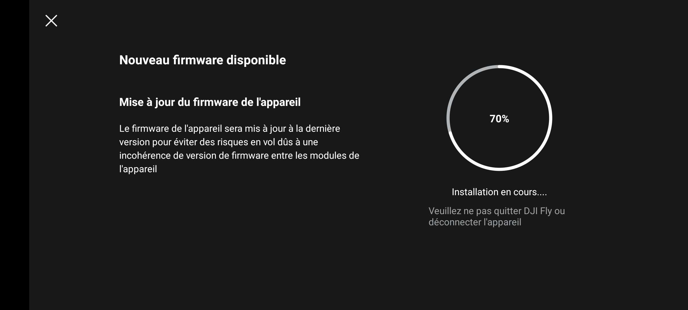
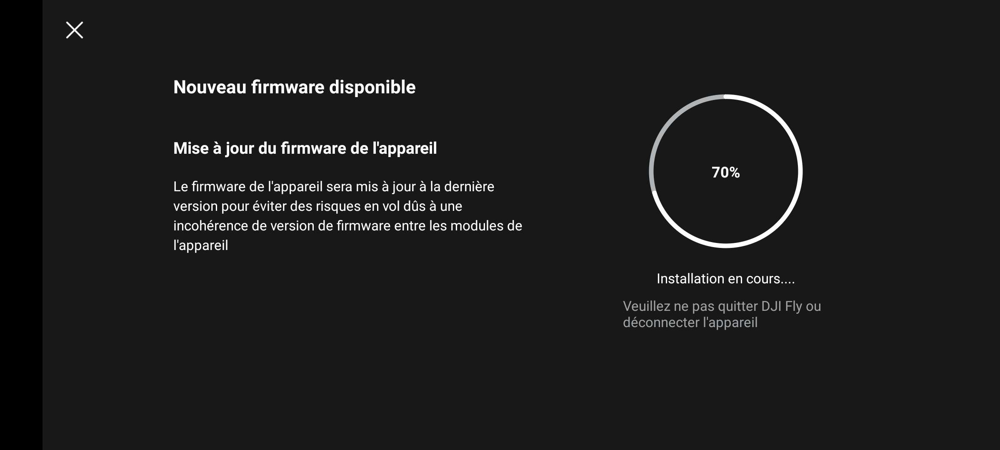

Préparation
üìë Manuel d'utilisation du Mavic Air 2
Préparation du drone
Pour ne pas perdre de temps sur le terrain, il est important de faire quelques préparatifs.
-
Prenez connaissance du Manuel d'utilisation du Mavic Air 2.
-
Commencez par installer l'application Litchi Fly si ce n'est pas déjà fait (⚠️ l'application peut être installée sur trois appareils simultanément au maximum) :
-
Installez l'application DJI qui correspond à votre modèle de drone (nécessaire pour les mises à jour du drone et la désactivation des No Flight Zone dont nous parlerons plus tard). ⚠️ Sur Android, l'application n'est pas disponible sur le Play Store. Il faut télécharger et installer un apk directement depuis le site de DJI. Beaucoup de fausses applications sont disponibles sur les stores. Apple ou Android, nous vous conseillons de télécharger les applications depuis le site de DJI :
-
Branchez votre téléphone à la télécommande et autorisez tous les transferts de données. À un stade, votre téléphone vous proposera de toujours utiliser
DJI FlyouLitchi FLy. Comme il faudra souvent basculer entre les deux, faites en sorte de ne pas activer cette option pour pouvoir choisir à chaque connexion. Allumez le drone et la télécommande en faisant, sur chacun, un clic rapide et un clic long sur le bouton power. Rendez-vous maintenant dans l'applicationDJI Fly.
- Vous aurez peut-être des calibrations à faire, suivez les instructions de l'application.
Ensuite, rendez-vous dans le menu pour vérifier si des mises à jours firmware sont disponibles en faisant :
... > À propos > Firmware de l'appareil > Rechercher des mises à jour

 

-
Fermez l'application
DJI Flypuis ouvrezLitchi Fly. (Il faut bien fermer totalement l'application et non pas la mettre seulement en fond). Vérifiez que votre drone se connecte bien. Si c'est le cas, vous être prêt pour les prochaines étapes ! -
Chargez toutes les batteries et la manette avant tout vol ! Même si le drone n'a pas été utilisé depuis le dernier chargement, les batteries se déchargent lorsqu'elles sont stockées.
Le matériel pour les vols
Peu de matériel est à prévoir en plus du drone (le matériel du drone est dans sa sacoche) :
- üîã Batteries charg√©es.
- üéÆ T√©l√©commande charg√©e.
- üì± T√©l√©phone(s) charg√©(s).
- üï∂Ô∏è Lunettes de soleil pour les op√©rateurs (surveiller le drone dans le ciel peut √™tre compliqu√© avec le soleil).
- üï∂Ô∏è Lunettes de soleil pour le drone, ou plut√¥t, les filtres UV de la cam√©ra. Cela √©vite que les images soient sur expos√©es et donc inutilisables.
- Tapis de décollage et atterrissage si on est dans une zone poussiéreuse (sable, terre, ...). Cela évite que le sol se soulève et endommage le drone. Un tapis de voiture fait très bien l'affaire.
- üíª Ordinateur charg√© pour r√©-ajuster les missions Litchi sur place.
Vol d'essai
Avant d'opérer le vol final, il faut que vous soyez familier avec le drone et les applications qui permettent de le contrôler. Trouvez un terrain assez dégagé pour faire vos essais. Une fois que vous connaissez le lieu de l'essai, planifiez quelques missions que vous pourrez essayer sur place. Cela permettra de vérifier que vous avez bien compris les étapes de planification de vol et de faire un premier test avec le logiciel de reconstruction. Vous pourrez ainsi avoir une meilleure vision de la file générale des opérations. De plus, vous pourrez éventuellement détecter des problèmes dans la prise d'image de la mission et rectifier cela pour la véritable acquisition.
üìÜ Id√©alement, celui-ci a lieu au d√©but du projet, avant la planification des vols automatiques pour la mission finale.
Essayez les différents filtres UV pour la caméra afin de vous familiariser avec leur mise en place et effet. Prenez des photos avec chaque filtre installé.
Vol manuel
Commencez par faire un petit tour en vol manuel avec le drone.
Bien que les missions soient automatisées, il faut souvent intervenir à la main.
Pour cela, commencez par faire décoller le drone en appuyant sur l'icône correspondant dans DJI Fly ou Litchi Fly.
Le drone va s'élever à 1,2m d'altitude et vous pourrez alors le contrôler.
Le point de décollage est enregistré comme point de Home par le drone.
Il reviendra ici lorsque vous lui direz d'atterrir en mode RTH (Return To Home).

Plusieurs configurations de commandes peuvent être utilisées pour les joysticks.
Ils peuvent être changés dans DJI Fly.
Trois modes pré-configurés existent (cf. p32 Manuel d'utilisation du Mavic Air 2).
Voici le mode utilisé pour le drone Mavic Air 2 de Mitsio Motu :

À l'arrière de la télécommandes, des boutons sont disponibles pour gérer la partie caméra, photos et vidéos :

Amusez-vous, c'est l'occasion de prendre de jolies photos ! üì∏
Vols automatiques
C'est le moment de tester les vols que vous avez préparés pour cette session d'essai.


Rendez vous dans la section Waypoint dans l'application et chargez votre mission.1
Réglez ensuite le degré de la caméra à celui souhaité pour la mission grâce à la roulette en haut à gauche de la manette.
Vous pouvez voir à quel degré exactement la caméra est inclinée, comme illustré dans l'image ci-dessous :

Vérifiez que le format de capture des photos. Le drone Mavic Air 2 peut enregistrer les images en JPEG uniquement ou en JPEG + RAW. Le format RAW est très adapté pour retoucher les images mais est beaucoup plus lourd que le format JPEG. Si l'on ne souhaite pas retoucher les images, il n'est pas nécessaire de les enregistrer dans ce format. Pour la reconstruction 3D ce format n'est pas forcément nécessaire.

Assurez vous que les images sont bien enregistrées sur la mémoire externe et non interne du drone (avec 8Go, elle sera vite saturée, encore plus si vous enregistrez les fichiers RAW).
Pour cela, rendez-vous dans les paramètres : ... > Caméra > Emplacement de stockage.

Lancez ensuite simplement le vol en cliquant sur Play.

C'est parti !
Plus qu'à laisser le drone faire son travail.
Vérifiez tout de même qu'il effectue bien ce qui est prévu et que ça correspond à ce que vous souhaitiez.
Vous perdez alors tout le contrôle du drone par les joysticks.
Cependant, vous pouvez empêcher le drone de foncer dans un mur en cliquant sur les boutons pause ⏸️ ou stop ⏹️ :
-
pause ⏸️: Les joysticks n'ont toujours pas d'effet. Le drone ne peut pas être déplacé. Vous pouvez cependant rectifier le heading du drone en faisant glisser votre doigt sur l'image sur votre téléphone. Cependant, cette solution n'est pas très précise. La mission continue depuis ce point quand vous appuyez surplay ▶️️.Ce bouton est très utile dès que vous avez un doute sur une potentielle collision du drone. Dès que vous avez un doute, utilisez le. Vous aurez alors le temps de vérifier si le drone peut continuer ou non.
-
stop ⏹️: La mission est arrêtée. Vous reprenez tout le contrôle du drone. Quand vous êtes sûr que vous allez rencontrer un obstacle, il faut appuyer sur ce bouton. Vous pouvez alors contourner manuellement l'obstacle. Ensuite, relancez la mission au waypoint le plus proche et sécuritaire, après l'obstacle. Comme Litchi n'indique pas à quel waypoint de la mission se trouve le drone, ce sera à vous d'estimer à quel waypoint reprendre la mission.
Reconnaissance sur le terrain
La reconnaissance sur le terrain est elle aussi importante. Elle permet d'identifier certains problèmes potentiels et de mieux comprendre l'organisation de l'environnement. Par exemple, à l'Hôtel de la Paix, nous avons constaté qu'il y avait de nombreux palmiers proches des façades. En plus d'être problématiques pour la prise d'images et la reconstruction, cela augmente les risques de collision.
üìÜ Id√©alement, la reconnaissance a lieu avant (ou au d√©but) de la planification des missions automatiques.
C'est également l'occasion de faire des relevés de hauteur de bâtiment si nécessaire. La méthode à suivre est renseignée dans la partie Planification de la mission, section Le toit.
Si l'occasion se présente, il peut être intéressant de prévoir un premier survol très grossier de la zone. Vous pouvez pour cela prévoir une mission en grille croisée, caméra à 45° en altitude assez haute (>40m).
Voir la partie Importation sur Litchi Fly, section Application mobile pour voir comment faire.